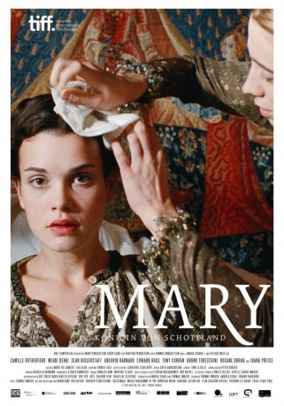

#5992 Mary, Queen of Scots
 
 IMDB-Wertung: 5.5 / 10
IMDB-Wertung: 5.5 / 10  Metascore: 0
Metascore: 0 
Die schottische Königin Mary Stuart verbringt ihre Jugend in Frankreich. Sie soll auch die französische Krone tragen, doch jung verheiratet, stirbt ihr kränklicher Gemahl. Mary kehrt alleine in das vom Krieg versehrte Schottland zurück. Zur selben Zeit wird Elisabeth Königin von England. Für Mary ist sie wie eine Zwillingsschwester, der sie sich offenherzig anvertrauen kann. Sie heiratet erneut und gebärt einen Thronfolger. Ihr Mann, Lord Darnley, entpuppt sich als Schwachkopf. Als Mary ihre große Liebe im Earl of Bothwell findet, lässt sie Darnley meucheln und heiratet Bothwell. Entsetzt über diese von blinder Leidenschaft getriebene Tat, entziehen ihr die Adligen und das Volk die Gefolgschaft. Um eine blutige Schlacht zu verhindern, muss Mary auf ihren geliebten Bothwell verzichten. Verzweifelt sucht sie Hilfe bei Elisabeth, die sie jedoch einsperren lässt. Nach 19 Jahren im goldenen Käfig gewährt ihr Elisabeth die „Erlösung“ durch das Schafott.
Jahr: 2013
Dauer: 119 Minuten
FSK: 12
Land: Schweiz Studio: One FilmverleihTonspuren:
Untertitel:
Auflösung: 720p (1280x688) Größe: 4485 MB
Genre: Drama, Geschichte, Biographie
Regisseur: Thomas Imbach
Drehbuch: Rune Denstad Langlo
Soundtrack:
Darsteller:
- Camille Rutherford als Mary
- Sean Biggerstaff als Bothwell
 Aneurin Barnard als Darnley
Aneurin Barnard als Darnley Edward Hogg als Moray
Edward Hogg als Moray Tony Curran als John Knox
Tony Curran als John Knox- Bruno Todeschini als De Croc
- Joana Preiss als Marie de Guise
 Roxane Duran als Mary Seton
Roxane Duran als Mary Seton- Gaia Weiss als Mary Fleming
 Clive Russell als Douglas
Clive Russell als Douglas- Ian Hanmore als Ruthven
 Philip Maurice Hayes als English Ambassador
Philip Maurice Hayes als English Ambassador- Ralph Gassmann als English Envoy
- Florian Nussbaumer als Lord
 Milan Peschel als Lord
Milan Peschel als Lord- Udo Happel als Headsman
- Diana Meierhans als
- Elo Cinquanta als Noble English Lady , uncredited
- Mehdi Dehbi als David Riccio
- François Florey als French Nobleman
- Vittoria Turelli als Young Mary Seton
- Lana Brasileiro als Young Mary Livingstone
- Ornella Turelli als Young Mary Fleming
- Thilane Bifrare als Young Mary Beaton
- Zoé Schellenberg als Mary Beaton
- Pénélope Lévêque als Mary Livingstone
- Sebastian Stragiotti-Axanciuc als Young François II
- Martyn Jaques als Narrator
- Sylvain Levitte als François II
- Stephan Eicher als Henry II
- Alain Zaepffel als Cardinal
 Hassam Ghancy als Henry II
Hassam Ghancy als Henry II- Lukas Kubik als Fiancé Lord
- Rebecca Palmer als Countess Argyll
- Ryan Fletcher als Farmer
- Anais Tinguely als Young Mary
 Siegfried Terpoorten als Lord
Siegfried Terpoorten als Lord- Daniel Hunziker als Lord
- Olivier Fabrice Falconnier als Lord
- David Docherty als Lord
- Tuna Oez als Lord
- Patrizia Stotz als Knox's Wife
- Anne Downie als Scottish Farmer
- Scott Fletcher als Scottish Boy
- Raphael Toel als Scottish Boy
- Marine van den Broek als Farmer
Datei: X:\2013(I-M)\Mary, Queen of Scots (2013, FSK12, 1280x688).mkv seit 18.04.2017
Festplatte: HD 2013(I-Z)-2014(A-Z)
 Es gibt insgesamt 89 Filme in der Gruppe '2013(I-M)'
Es gibt insgesamt 89 Filme in der Gruppe '2013(I-M)'